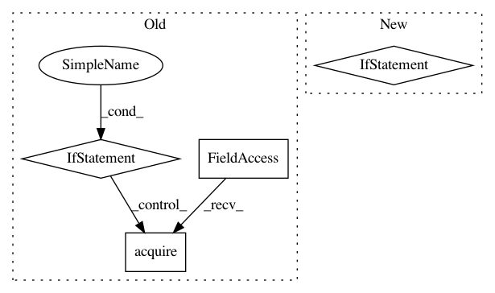

08f049c9fc5fc0f3da5a830de72a583007cdec66,elfi/methods/methods.py,BayesianOptimization,prepare_new_batch,#BayesianOptimization#Any#,400
Before Change
pending_params = self._get_pending_params()
t = self.batches.total - self.n_initial_evidence
if t >= self.n_initial_evidence:
new_param = self.acquisition_method.acquire(1, pending_params, t)
else:
new_param = self.init_acquisition.acquire(1, pending_params, t)
// Add the next evaluation location to the pool
self.pool.add_batch(batch_index, dict(zip(self.parameters, new_param[0])))
def extract_result(self):
param, min_value = stochastic_optimization(self.target_model.predict_mean,
After Change
self.state["last_update"] = self.target_model.n_evidence
def prepare_new_batch(self, batch_index):
if self.n_submitted_evidence < self.n_initial_evidence:
return
pending_params = self._get_pending_params()
t = self.batches.total - int(self.n_initial_evidence/self.batch_size)
new_param = self.acquisition_method.acquire(self.batch_size, pending_params, t)
In pattern: SUPERPATTERN
Frequency: 3
Non-data size: 4
Instances
Project Name: elfi-dev/elfi
Commit Name: 08f049c9fc5fc0f3da5a830de72a583007cdec66
Time: 2017-03-31
Author: jarno.lintusaari@aalto.fi
File Name: elfi/methods/methods.py
Class Name: BayesianOptimization
Method Name: prepare_new_batch
Project Name: ilastik/ilastik
Commit Name: 34556e97a90ed3416424fa8c506962b22b5dd806
Time: 2013-01-18
Author: bergs@janelia.hhmi.org
File Name: lazyflow/request/request_rewrite.py
Class Name: RequestLock
Method Name: acquire
Project Name: BYU-PCCL/holodeck
Commit Name: 7dcfeb8c4462f72d7ed1e730a83a6734f7ce6b28
Time: 2019-05-01
Author: maxdrob1@gmail.com
File Name: holodeck/environments.py
Class Name: HolodeckEnvironment
Method Name: step